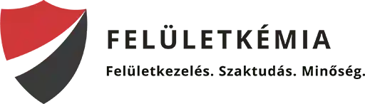
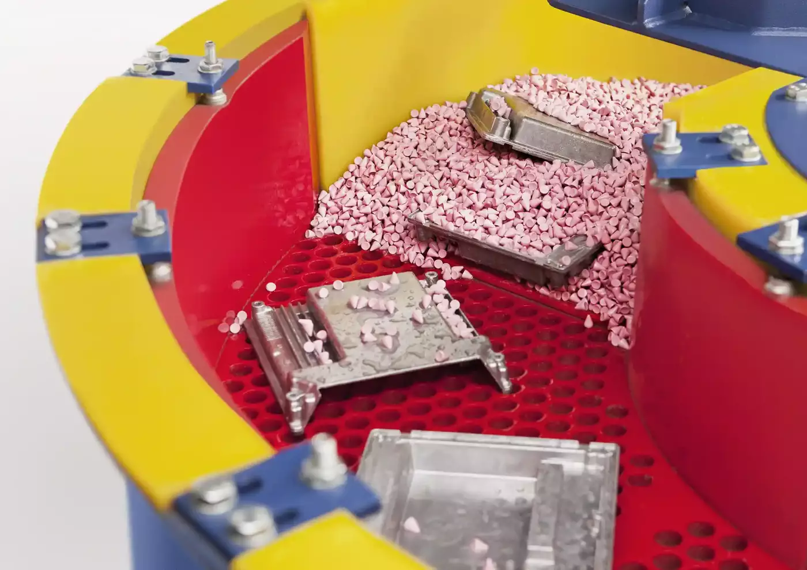

<DOCTYPE html>
    <html lang="en">
    <head>
        <meta charset="UTF-8">
        <meta name="viewport" content="width=device-width, initial-scale=1.0">
        <meta name=”robots” content=”noindex”> 
        <title>Weboldal Címe</title>
        <link rel="icon" type="image/x-icon" href="favicon.ico">
        <link rel="stylesheet" href="https://cdnjs.cloudflare.com/ajax/libs/font-awesome/4.7.0/css/font-awesome.min.css">
        <style>
    
        body {
        margin: 0;
        }	
    
            /* Fejléc stílusa */
            .header {
                background-color: black;
                height: 41px;
                position: relative;
                color: white;
                paddig: 10px;
            }
    
            /* Piros csík a fejléc alján */
    
            .red-line {
                background-color: red;
                height: 1px; /* 1 pixel magas piros csík */
                width: 100%;
                position: absolute;
                bottom: 0;
            }
    
         /* Módosított CSS a kicsinyített és animált logóhoz */
            div.white-line {
                background-color: white;
                height: 100px;
                width: 100%;
            position: sticky;
            top: 0;
            float: right;
            }
    
            /* Normál logó méret */
            div.white-line img {
                float: left;
                width: 25%; /* A logó normál méretben jelenik meg */
                height: auto;
                margin-right: 10px;
                transition: width 0.5s; /* 0.5 másodperces átmenet a logó méretéhez */
            }
    
            /* Kicsinyített logó, amikor a white-line elem sticky */
            div.white-line.sticky img {
                width: 20%; /* A logó 30%-os méretben jelenik meg, amikor a white-line elem sticky */
            }
    
        .btn {
          background-color: black;
          border: none;
          color: white;
          padding: 12px 16px;
          font-size: 15px;
          cursor: pointer;
        float: right;
        }
    
         .flip-box {
      background-color: transparent;
      width: 148px;
      height: 100px;
      border: 1px solid #f1f1f1;
      perspective: 1900px;
      float: right;
    }
    
    .flip-box-inner {
      position: relative;
      width: 100%;
      height: 100%;
      text-align: center;
      transition: transform 0.8s;
      transform-style: preserve-3d;
    }
    
    .flip-box:hover .flip-box-inner {
      transform: rotateX(180deg);
    }
    
    .flip-box-front, .flip-box-back {
      position: absolute;
      width: 100%;
      height: 100%;
      -webkit-backface-visibility: hidden;
      backface-visibility: hidden;
    }
    
    .flip-box-front {
      background-color: #bbb;
      color: black;
    }
    
    .flip-box-back {
      background-color: dodgerblue;
      color: white;
      transform: rotateX(180deg);
    }
        
        </style>
    
    </head>
    
    <body>
    
        <div class="header">
    
        <button class="btn"><i class="fa fa-cloud"></i> Letöltések</button>
        <button class="btn"><i class="fa fa-user"></i> Kapcsolat</button>
        
        
        
    
        <div class="red-line"></div>
        
        </div>
    
        <div class="white-line">
    
        <a href="/feluletkemia/index6.html">
    
    
    
    <!-- <div class="flip-box">
      <div class="flip-box-inner">
        <div class="flip-box-front">
          <h2>Front Side</h2>
        </div>
        <div class="flip-box-back">
          <h2>Back Side</h2>
        </div>
      </div>
    </div>
    -->
        
        </div>
    
        </div>
    
    
    
    
    
    <script>
            // JavaScript kód a görgetés figyeléséhez
            window.addEventListener("scroll", function() {
                var whiteLine = document.querySelector(".white-line");
                var distance = whiteLine.getBoundingClientRect().top;
    
                if (distance <= 0) {
                    whiteLine.classList.add("sticky");
                } else {
                    whiteLine.classList.remove("sticky");
                }
            });
        </script>
    
    
    
    </body>
    
    </html>
    